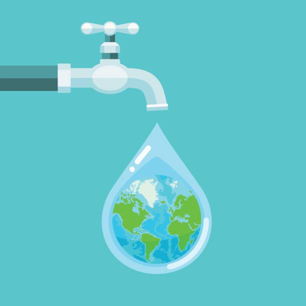

Cosas que contaminan el agua ____
Importancia del agua___
Problemáticas ambientales___
Tipos de agua___
Que es el agua____
VIDEO____
Currículum
PROYECTO TRASNVERSAL
EL AGUA
VIDA SALUDABLE
Es la única sustancia que se puede encontrar en los tres estados de la materia (líquido, sólido y gaseoso) de forma natural en la Tierra
El agua es una sustancia cuya molécula está compuesta por dos átomos de hidrógeno y uno de oxígeno unidos por un enlace covalente
El agua cubre el 71 % de la superficie de la corteza terrestre.3? Se localiza principalmente en los océanos, donde se concentra el 96,5 % del total
El agua circula constantemente en un ciclo de evaporación o transpiración (evapotranspiración), precipitación y desplazamiento hacia el mar
El agua es una sustancia que químicamente se formula como H2O, es decir, que una molécula de agua se compone de dos átomos de hidrógeno enlazados covalentemente a un átomo de oxígeno
Fue Henry Cavendish quien descubrió en 1782 que el agua es una sustancia compuesta y no un elemento, como se pensaba desde la antigüedad
COMO PREVENIR QUE SE ACABE EL AGUA
- Informar a la población sobre los impactos del cambio climático y la contaminación en los recursos hídricos.
- Promover la reparación de fugas y filtraciones en viviendas.
- Fomentar el uso de sistemas de riego por goteo en jardines y áreas verdes.
- Desarrollar políticas que fomenten el uso eficiente del agua en todas las áreas.
- Invertir en infraestructuras para la captación y almacenamiento de agua de lluvia.
QUE HACER PARA CUIDAR EL AGUA
- Coloca un par de botellas llenas de arena dentro del compartimento de recarga del inodoro.
- Cierra la llave mientras te cepillas los dientes o te afeitas.
- Vigila el estado de los grifos de tu casa, si gotean repáralos.
- Cierra la llave de la regadera mientras te enjabonas.
- No demores en la regadera.

LA IMPORTANCIA DEL AGUA
- El agua es la sustancia que más abunda en la Tierra y es la única que se encuentra en la atmósfera en estado líquido, sólido y gaseoso.
- Una cuenca abarca todo el territorio cuyas aguas confluyen hacia un río, lago o mar. Dentro de una misma cuenca, pueden existir climas (temperatura, insolación, humedad) diferentes según la altitud del terreno. Dentro del cauce de los ríos, el agua circula desde las regiones más altas hacia las más bajas.
- Las precipitaciones, que pueden ser en forma de lluvia, nieve o granizo, se producen cuando las gotas de agua se unen, haciéndose cada vez más grandes y pesadas.Resumiendo, las precipitaciones se originan por la interacción de dos características del aire.
- Las precipitaciones devuelven al suelo, mares y océanos el agua evaporada por el calor del sol. Este ciclo no se interrumpe jamás.
Cuando el agua cae sobre la tierra, se infiltra lentamente en los suelos que contienen materia orgánica.
- El agua es indispensable para la vida, porque ningún organismo sobrevive sin ella.
- Reintegran el agua al medio ambiente con la respiración, transpiración y con la orina y excrementos.
- Las plantas se han adaptado para vivir dentro del agua, en climas de gran humedad y en climas secos y desérticos.
- El agua dulce es imprescindible para la vida, pero la cantidad disponible es escasa y su distribución desigual.
- El agua es indispensable para la vida vegetal.
- La contaminación se produce cuando el agua contiene demasiada materia orgánica, o sustancias tóxicas no orgánicas.
La materia orgánica presente en el agua es destruida por organismos descomponedores (bacterias), que necesitan oxígeno para actuar.

+52 686 589 7213
Cuidemos_elagua@gmail.com
Como cuidar el agua
Como cuidar el agua
CARR A SAN FELIPE KM 7.5 S/N
EDEL ULISES ZAMORA